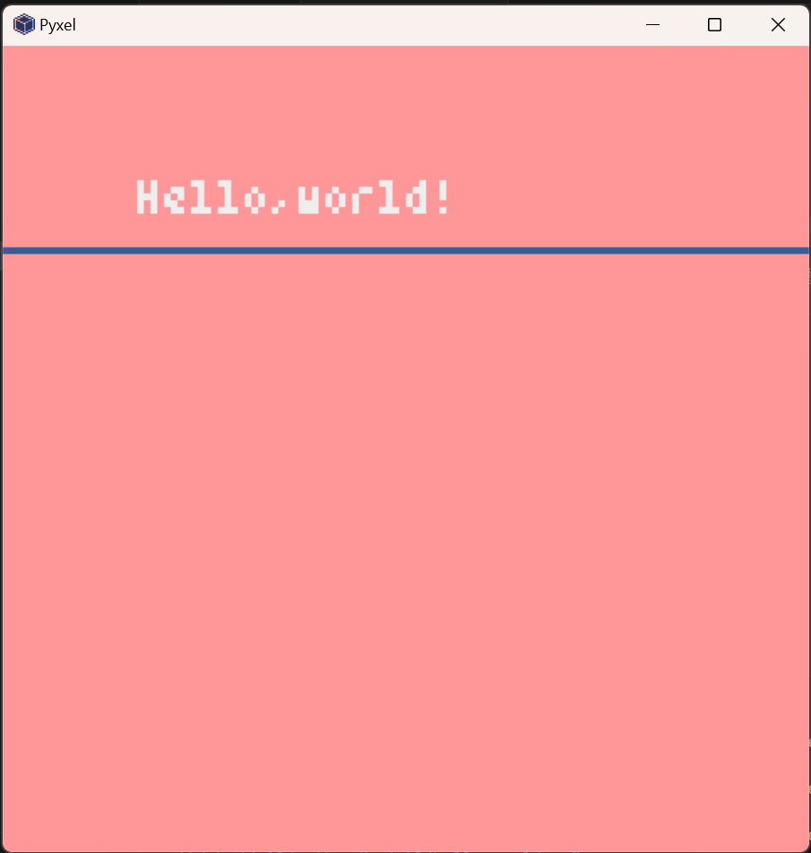
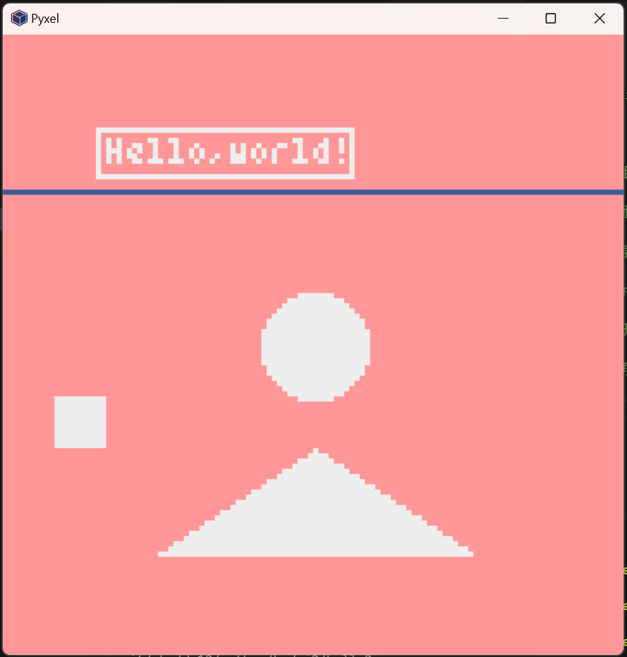
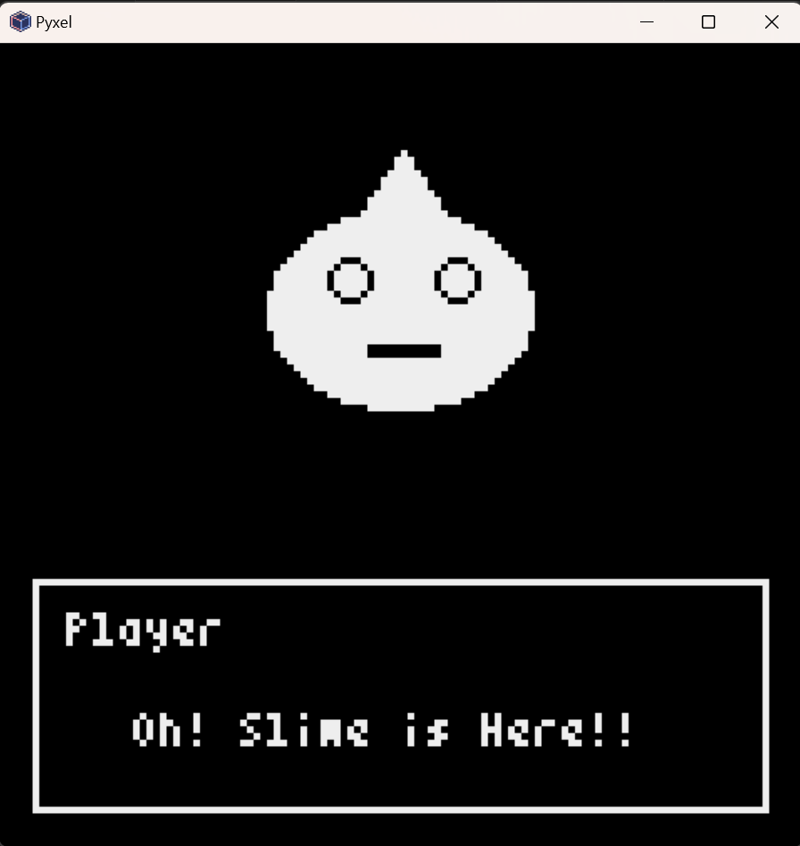

と思いながらライブラリやネットで調べていたところ、”Pyxel”というドット絵の
ゲームが作れちゃうライブラリを見つけ出しました！！
このライブラリの仕様は、
- Windows、Mac、Linux、Web で動作
- Python によるプログラミング
- 16 色パレット
- 256x256 サイズ、3 イメージバンク
- 256x256 サイズ、8 タイルマップ
- 4 音同時再生、定義可能な 64 サウンド
- 任意のサウンドを組み合わせ可能な 8 ミュージック
- キーボード、マウス、ゲームパッド入力
- 画像・サウンド編集ツール
- パレット、発音数、各種バンクのユーザー拡張
その他にも様々な特徴があるので、まずは下記のリンクを確認してみてください！！
こんなこともできるの！？と、きっと驚くはずです笑笑
リンク：Pyxel-readme-jp
【サンプルコードを動かす】
とにもかくにも、コードが動かないと話にならないので、まずはサンプルコードを動かしてみました！
使用したコードは、公式が公開してくれているサンプルの中でも一番シンプルな
コードです。
※このコードの実行にはPyxelのインストールが必須です。
※ウェブ版→デモ1
import pyxel
class App:
def __init__(self):
pyxel.init(160, 120, title="Hello Pyxel")
pyxel.images[0].load(0, 0, "assets/pyxel_logo_38x16.png")
pyxel.run(self.update, self.draw)
def update(self):
if pyxel.btnp(pyxel.KEY_Q):
pyxel.quit()
def draw(self):
pyxel.cls(0)
pyxel.text(55, 41, "Hello, Pyxel!", pyxel.frame_count % 16)
pyxel.blt(61, 66, 0, 0, 0, 38, 16)
App()
とまあ、ここまでは順調だったのですが、いざゲームを作ろうとしたところ
なにがなんだかさっぱりで、READMEを読みながらではなにもできなかったため、
YouTubeで使い方を調べて勉強しながらゲームを作り始めました！
【チュートリアル】
ここからは自分が忘れないようにすることも兼ねて、ドキュメンテーションをしたいと思います。
まずは簡単なプログラミングから。
import pyxel #Pyxelライブラリ呼び出し
pyxel.init(120,120) #120X120ピクセルの領域を初期化(init = initialization)
pyxel.cls(14) #()内の数字の色で初期化
pyxel.text(20,20, "Hello,world!",7) #20X20の位置から、7番目の色(白)で文字を表示
pyxel.line(0,30,120,30,5) #(x1,y1地点からx2,y2地点までを5番目の色(青))で線を引く
pyxel.show() #画面を表示。ESCが押されるまで待機する
※使用しているカラーパレット

参考
{kind=link}
このコードを実行すると、このような画面が表示されます！！

無事指定通りにプログラムが動きました！！やったね！！
ちなみに、画面内の座標は
画面右上端が(x=0,y=0)で、
画面左下端が(x=120,y=120)になっています！
【図形の描写】
ここまでできたら、今度は図形を描写したいと思います。Pyxelには、図形を描写する機能もあるので、こちらをどんどん使っていきます！
import pyxel
pyxel.init(120,120)
pyxel.cls(14)
pyxel.text(20,20, "Hello,world!",7)
pyxel.line(0,30,120,30,5)
pyxel.circ(60,60,10,7) #(x,y地点に半径10の円を7番目の色)で表示する
pyxel.tri(30,100,60,80,90,100,7) #(x1,y1,x2,y2,x3,y3の地点を頂点とした三角形を7番の色)で表示
pyxel.rect(10,70,10,10,7) #(x,yから、幅,高さ,色番号)の四角形を表示
pyxel.rectb(18,18,50,10,7) #(x,yから、幅,高さ,色番号)の四角形の枠線を表示。circb/tribで、円の枠線、三角形の枠線にもできる。
pyxel.show() #画面を表示。ESCが押されるまで待機する
コードを見やすくするために、前回と変わらないところの#は消してあります。
このコードを実行すると、今度はこうなります！！

今回も指定通りにプログラムを動かせました！！いぇい！！
ここまで出来るようになれば、ついにゲーム画面を作成できるように
なります！！
例として、RPG風の画面を作成してみました！
コードはこちら。↓
import pyxel #Pyxelライブラリ呼び出し
pyxel.init(120,120) #120X120ピクセルの領域を初期化(init = initialization)
pyxel.cls(0) #()内の数字の色で初期化
pyxel.text(10,85,"Player",7) #文字を表示
pyxel.text(20,100,"Oh! Slime is Here!!",7) #文字を表示
pyxel.rectb(5,80,110,35,7) #文字枠
pyxel.tri(60,16,66,25,54,25,7) #スライムの頭の部分
pyxel.elli(40,25,40,30,7) #スライムの本体部分
pyxel.circb(52,35,3,0) #スライムの右目
pyxel.circb(68,35,3,0) #スライムの左目
pyxel.rect(55,45,11,2,0) #スライムの口
pyxel.show()
このコードを実行すると、このような画面が表示されます！！

シンプルな画面ですが、それっぽく作れました！！
ただ、これだけだと画面に図形を組み合わせて描写しているだけで
つまらないので、アニメーションをつけたいと思...ったのですが、
ここで時間切れ。提出期限になってしまったので一旦ここまでです。
また時間が多く確保できるときに勉強し直して、アニメーションまでつけれる
ようになりたいです！
【感想】
このライブラリを見つけ出したときには、結構簡単にゲームを作れる！！と思ったのですが、知識をつけないとどうすることもできない
ことを実感。レトロゲームですらここまで大変なのだから、世に出回っている
ゲームがどれだけ凄いものなのか、身に染み込みました。
全てのゲームクリエイターに感謝！！
【Spescial Thanks!!】
Pyxel【Pyxel入門】 Pythonでレトロなゲームを作ろう！
【Pyxel入門】 Pythonでレトロなゲームを作ろう！②ゲーム作成ことはじめ
【Pyxel入門】 Pythonでレトロなゲームを作ろう！③動きと入力